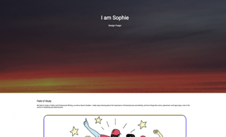
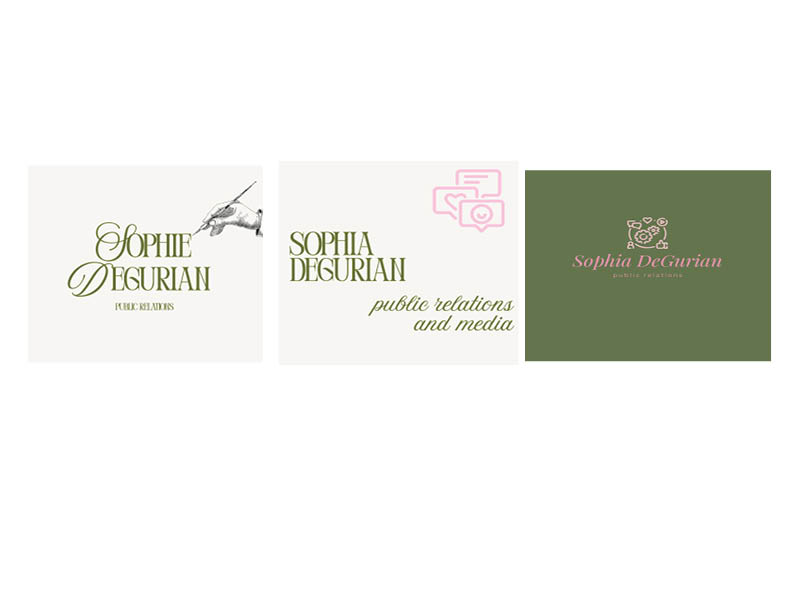
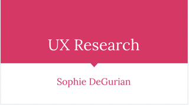
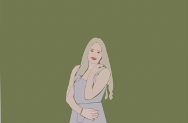

Design Beginnings
Design Fuego

This first project really tested my ability to code. I really enjoyed learning how to insert images and change text for a website!
Logo A/B/C

Designing these logos made me think about who I am and how I want to be represented once I enter the job field.
UX Testing Logo Project

It was super intersting to see the difference in opinions on these three logos from different people. Especially because they were all in teh same age range and shared the same occupation as student. I liked conducting the research of this, and it helped me to create a better logo combining all of the elements from the three logos that stood out to the participants.
Cartoon Portrait

This was probably the most tedious project that I completed. If I were to redo it I would choose a different picture where I am not in a complicated pose.
Good Design

I really enjoyed this assignment. I thought it was fun to look at and find an example of what I think is good design. Additionally, I thought it was interesting to see what other students considered good design.
.png)